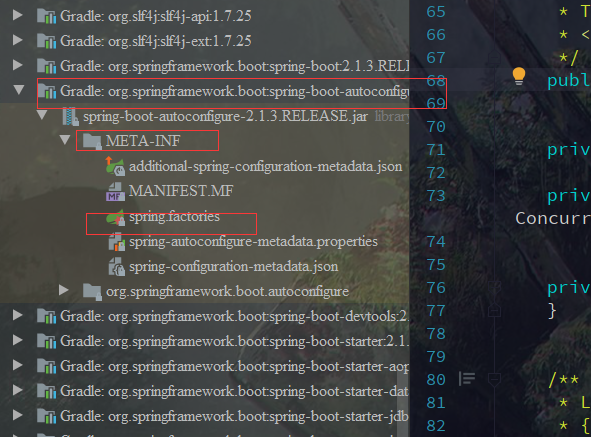

Springboot源码探析 — 自动配置
复杂的场景—规范（框架）—按照特定的规则，配置
JavaWeb Servlet+Tomcat 繁琐~演进
SpringMVC
Springboot
Spring开源框架
目的：简化企业开发 2003~2020
为了降低java的开发复杂性，spring采取了以下4种关键策略
- 基于POJO的轻量级和小侵入性编程
- 通过IOC、依赖注入（DI）和面向接口实现松耦合
- 基于切面（AOP）和惯例进行声明式编程
- 通过切面和模板减少样式代码
创建项目流程
- 创建一个项目，导入一堆的依赖
- 配置web.xml
- 配置spring的文件
- 编码、测试
- 配置tomcat
- 发布
Springboot
自动配置
主要优点
- 为所有spring开发者更快的入门
- 开箱即用，提供各种默认配置来简化项目配置
- 内嵌式容器简化web项目
- 没有冗余代码生成的xml配置的要求
一些问题
Spring Boot（甚至整个Spring）大量采用了“Convention over configuration”约定胜于配置的设计模式，有大量的机制（比方说配置发现、方法命名等等）依赖于隐式的约定。当对这些约定不熟悉的时候，就会陷入“撞大运”编程模式，这里改改，那里调调，虽然不知道为什么，但程序就工作了；又或者就不工作了，然后需要耗费大量的时间去debug，或者请教他人。
其实还有另一种相反的编程箴言：
Explicit is better than implicit.
Spring有一个项目来解决这个问题Kofu
创建项目流程
必须在主启动类的统计或者子级目录下编写代码？why?
- 创建一个项目，导入一些启动器（封装了很多依赖）
- 编写代码，测试运行
- 发布
元注解：注解别的注解的注解
@Target(ElementType.TYPE)
@Retention(RetentionPolicy.RUNTIME)
@Documented
@Inherited
源码解读
pom依赖部分
1
2
3
4
5
6
7
8
9
10
11
12
13
14
15
16
17
18
19
20
21
22
23
24
25
26
27
28
29
30
31
32
33
34
35
36
37
38
39
40
41
42
43
44
45
46
47
48
49
50
51
52
53
<!-- 项目里的父依赖 -->
<parent>
<groupId>org.springframework.boot</groupId>
<artifactId>spring-boot-starter-parent</artifactId>
<version>1.5.6.RELEASE</version>
<relativePath/> <!-- lookup parent from repository -->
</parent>
<!-- spring-boot-starter-parent的pom.xml -->
<!-- 插件、资源过滤 -->
<parent>
<groupId>org.springframework.boot</groupId>
<artifactId>spring-boot-dependencies</artifactId>
<version>1.5.6.RELEASE</version>
<relativePath>../../spring-boot-dependencies</relativePath>
</parent>
<build>
<!-- Turn on filtering by default for application properties -->
<resources>
<resource>
<directory>${basedir}/src/main/resources</directory>
<filtering>true</filtering>
<includes>
<!-- yml等同于yaml -->
<include>**/application*.yml</include>
<include>**/application*.yaml</include>
<include>**/application*.properties</include>
</includes>
</resource>
<resource>
<directory>${basedir}/src/main/resources</directory>
<excludes>
<exclude>**/application*.yml</exclude>
<exclude>**/application*.yaml</exclude>
<exclude>**/application*.properties</exclude>
</excludes>
</resource>
...
</resources>
...
</build>
<!-- spring-boot-dependencies的pom.xml -->
<!-- 版本控制中心 -->
<properties>
<!-- Dependency versions -->
<activemq.version>5.14.5</activemq.version>
<antlr2.version>2.7.7</antlr2.version>
<appengine-sdk.version>1.9.54</appengine-sdk.version>
<artemis.version>1.5.5</artemis.version>
<aspectj.version>1.8.10</aspectj.version>
<assertj.version>2.6.0</assertj.version>
<atomikos.version>3.9.3</atomikos.version>
...
</properties>
java代码部分
一个Springboot项目1
2
3
4
5
6
public class StudyApplication {
public static void main(String[] args) {
SpringApplication.run(StudyApplication.class, args);
}
}
可以看到主要就是一个注解 SpringBootApplication 和一个启动类 SpringApplication
查看SpringBootApplication注解的源码1
2
3
4
5
6
7
8
9
10
11
12(ElementType.TYPE)
(RetentionPolicy.RUNTIME)
(excludeFilters = {
(type = FilterType.CUSTOM, classes = TypeExcludeFilter.class),
@Filter(type = FilterType.CUSTOM, classes = AutoConfigurationExcludeFilter.class) })
public @interface SpringBootApplication {
...
}
刨除掉元注解，我们看到剩下的
- @SpringBootConfiguration
- @EnableAutoConfiguration
- @ComponentScan
- @SpringBootConfiguration
@SpringBootConfiguration — @Configuration — @Component
SpringBootConfiguration注解注释的主启动类本身也是一个组件，该组件的作用就是负责启动 @EnableAutoConfiguration
1
2
3
4
5
6
7
8
9
10
11
12
13
14
15
16
17
18
19// EnableAutoConfiguration
(AutoConfigurationImportSelector.class)
// AutoConfigurationPackage
@Import(AutoConfigurationPackages.Registrar.class)
// AutoConfigurationPackages.Registrar
static class Registrar implements ImportBeanDefinitionRegistrar, DeterminableImports {
public void registerBeanDefinitions(AnnotationMetadata metadata,
BeanDefinitionRegistry registry) {
register(registry, new PackageImport(metadata).getPackageName());
}
public Set<Object> determineImports(AnnotationMetadata metadata) {
return Collections.singleton(new PackageImport(metadata));
}
}可以看到这个静态中获取主启动类的包,也就是
必须在主启动类的统计或者子级目录下编写代码的原因1
2
3
4
5
6
7
8
9
10
11
12
13
14
15
16
17
18
19
20
21
22
23
24
25
26
27
28
29
30
31
32
33
34
35
36
37
38
39
40
41
42
43
44
45
46
47
48
49
50
51
52
53
54
55
56
57
58
59
60
61
62
63
64
65
66
67
68
69
70
71
72
73
74
75
76
77
78// AutoConfigurationImportSelector
public String[] selectImports(AnnotationMetadata annotationMetadata) {
if (!isEnabled(annotationMetadata)) {
return NO_IMPORTS;
}
AutoConfigurationMetadata autoConfigurationMetadata = AutoConfigurationMetadataLoader
.loadMetadata(this.beanClassLoader);
AutoConfigurationEntry autoConfigurationEntry = getAutoConfigurationEntry(
autoConfigurationMetadata, annotationMetadata);
return StringUtils.toStringArray(autoConfigurationEntry.getConfigurations());
}
// getAutoConfigurationEntry() 获取自动配置的实体
protected AutoConfigurationEntry getAutoConfigurationEntry(
AutoConfigurationMetadata autoConfigurationMetadata,
AnnotationMetadata annotationMetadata) {
if (!isEnabled(annotationMetadata)) {
return EMPTY_ENTRY;
}
AnnotationAttributes attributes = getAttributes(annotationMetadata);
List<String> configurations = getCandidateConfigurations(annotationMetadata,
attributes);
configurations = removeDuplicates(configurations);
Set<String> exclusions = getExclusions(annotationMetadata, attributes);
checkExcludedClasses(configurations, exclusions);
configurations.removeAll(exclusions);
configurations = filter(configurations, autoConfigurationMetadata);
fireAutoConfigurationImportEvents(configurations, exclusions);
return new AutoConfigurationEntry(configurations, exclusions);
}
// getCandidateConfigurations() 获取候选的配置
protected List<String> getCandidateConfigurations(AnnotationMetadata metadata,
AnnotationAttributes attributes) {
List<String> configurations = SpringFactoriesLoader.loadFactoryNames(
getSpringFactoriesLoaderFactoryClass(), getBeanClassLoader());
Assert.notEmpty(configurations,
"No auto configuration classes found in META-INF/spring.factories. If you "
+ "are using a custom packaging, make sure that file is correct.");
return configurations;
}
// loadFactoryNames()
public static List<String> loadFactoryNames(Class<?> factoryClass, @Nullable ClassLoader classLoader) {
String factoryClassName = factoryClass.getName();
return loadSpringFactories(classLoader).getOrDefault(factoryClassName, Collections.emptyList());
}
// loadSpringFactories()
public static final String FACTORIES_RESOURCE_LOCATION = "META-INF/spring.factories";
private static Map<String, List<String>> loadSpringFactories( ClassLoader classLoader) {
MultiValueMap<String, String> result = cache.get(classLoader);
if (result != null) {
return result;
}
try {
Enumeration<URL> urls = (classLoader != null ?
classLoader.getResources(FACTORIES_RESOURCE_LOCATION) :
ClassLoader.getSystemResources(FACTORIES_RESOURCE_LOCATION));
result = new LinkedMultiValueMap<>();
while (urls.hasMoreElements()) {
URL url = urls.nextElement();
UrlResource resource = new UrlResource(url);
Properties properties = PropertiesLoaderUtils.loadProperties(resource);
for (Map.Entry<?, ?> entry : properties.entrySet()) {
String factoryClassName = ((String) entry.getKey()).trim();
for (String factoryName : StringUtils.commaDelimitedListToStringArray((String) entry.getValue())) {
result.add(factoryClassName, factoryName.trim());
}
}
}
cache.put(classLoader, result);
return result;
}
catch (IOException ex) {
throw new IllegalArgumentException("Unable to load factories from location [" +
FACTORIES_RESOURCE_LOCATION + "]", ex);
}
}通过层层深入，我们发现了 META-INF/spring.factories ；我们找到改文件
1
2
3
4
5
6
7
8
9
10
11
12
13
14
15
16
17
18
19
20
21
22
23
24
25
26# Initializers
org.springframework.context.ApplicationContextInitializer=\
org.springframework.boot.autoconfigure.SharedMetadataReaderFactoryContextInitializer,\
org.springframework.boot.autoconfigure.logging.ConditionEvaluationReportLoggingListener
# Application Listeners
org.springframework.context.ApplicationListener=\
org.springframework.boot.autoconfigure.BackgroundPreinitializer
# Auto Configuration Import Listeners
org.springframework.boot.autoconfigure.AutoConfigurationImportListener=\
org.springframework.boot.autoconfigure.condition.ConditionEvaluationReportAutoConfigurationImportListener
# Auto Configuration Import Filters
org.springframework.boot.autoconfigure.AutoConfigurationImportFilter=\
org.springframework.boot.autoconfigure.condition.OnBeanCondition,\
org.springframework.boot.autoconfigure.condition.OnClassCondition,\
org.springframework.boot.autoconfigure.condition.OnWebApplicationCondition
# Auto Configure
org.springframework.boot.autoconfigure.EnableAutoConfiguration=\
org.springframework.boot.autoconfigure.admin.SpringApplicationAdminJmxAutoConfiguration,\
org.springframework.boot.autoconfigure.aop.AopAutoConfiguration,\
org.springframework.boot.autoconfigure.amqp.RabbitAutoConfiguration,\
org.springframework.boot.autoconfigure.batch.BatchAutoConfiguration,\
...随便打开一个自动配置类
1
2
3
4
5
6
7
8
9
10
11
12
13
14
15
16
17
18
19
20
21
22
23
24
25
26
27
28
29
30
31
32
33
34
35// AopAutoConfiguration
({ EnableAspectJAutoProxy.class, Aspect.class, Advice.class,
AnnotatedElement.class })
@ConditionalOnProperty(prefix = "spring.aop", name = "auto", havingValue = "true", matchIfMissing = true)
public class AopAutoConfiguration {
(proxyTargetClass = false)
(prefix = "spring.aop", name = "proxy-target-class", havingValue = "false", matchIfMissing = false)
public static class JdkDynamicAutoProxyConfiguration {
}
(proxyTargetClass = true)
(prefix = "spring.aop", name = "proxy-target-class", havingValue = "true", matchIfMissing = true)
public static class CglibAutoProxyConfiguration {
}
}
// RabbitAutoConfiguration
({ RabbitTemplate.class, Channel.class })
@EnableConfigurationProperties(RabbitProperties.class)
@Import(RabbitAnnotationDrivenConfiguration.class)
public class RabbitAutoConfiguration {
...
}
// RabbitProperties
(prefix = "spring.rabbitmq")
public class RabbitProperties {
...
}